Drivers Installation Assistant
The Short Help
(The Description is actual for the version 2.1.3)
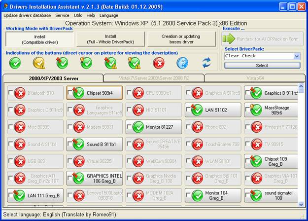
The Program (The shell) is assigned for device drivers quick installation and updating on computers with already installed Operating System (OS). For the installation are used driver packs prepared at advance and downloaded from other sites(links are presented in the menu Info - Links). Itself installation of the drivers is accomplished by DPInst from Microsoft.
The shell permits to have driverpacs for some OS at once. For work with drivers of current OS it ia necessary choose corresponding tab. If the default support for OS is not sufficient you could add yourself new ones through the menu Service - Parameters - Supported OS.
Program Basic Posibilities:
· Work with any driver packets (7z, zip archives), for any OS begining from Windows XP;
· Working under as 32 and working as 64;
· Driver installation possibility, in group and at choice;
· Possibility of drivers silent instllation (running command line with reqiured parameters);
· Being able to treat files «finish» in the Bashrat's packs;
· Clear program adjustment (all parameters are changed through options). All options are kept in one ini-file;
· Quick creation of driver basis (also possibility to create all Database by one button);
· Friendly user interface;
· Devices list preview for local PC ;
· Database preview for driver packs;
· Possibility ro run from any carrier;
· Possibility to add and run from interface programs-additional utilities (to add you should use menu Options - Parameters - Additional Utilities). That is you can use program as autorun in some extent (do not forget about licence agreement);
· Check for program updates through internet.
· Partial possibility to change program design (button icons, fonts and text colour, window and button sizes)
Driver packs should be placed to defined folders before the program is been ran.
By default, they are subfolders of the program drivers\ <folder for corresponding OC>
\drivers\Vista\
\drivers\Vista64\
\drivers\XP\
These folders may be changed through options, as practically all parameters (Menu Options - Parameters), See yourself and I think you will understand all.
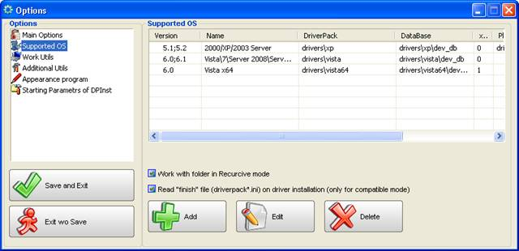
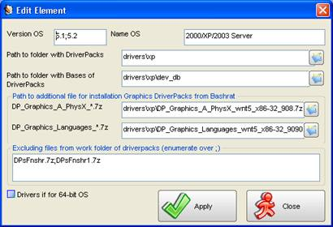
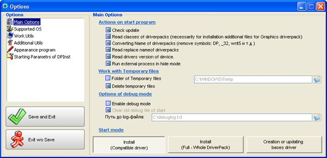
To create driver base you should run program, wait for icons show for each archive. Choose Creating / Updating DB and conduct one of the actions:
· click buttons one after another;
· check out to select necessary pacs and press button «Carry out task»
· Choose menu item DB updating for all packs and for all OS supported.
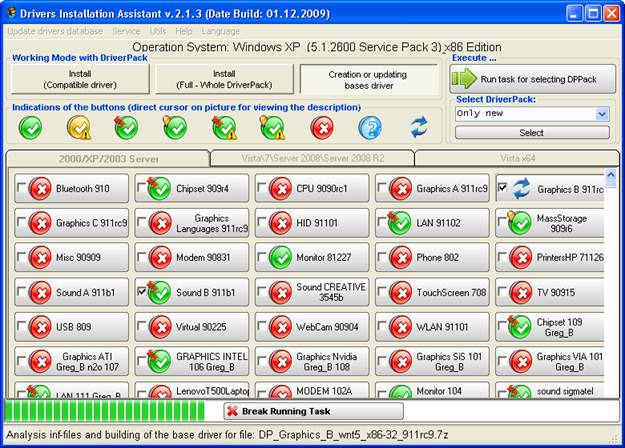
After updating DB when cursor pointer is over the button you will see popping up message (hint), where drivers available for your computer devices will be shown.
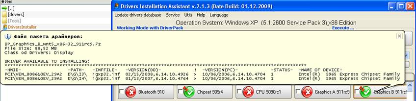
You can also see the list of available drivers in the pack by pressing right mouse button and choosing item «Show list of the available drivers» in the context menu
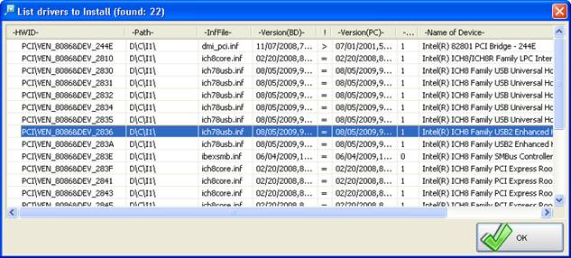
You need choose necessary mode to install/update drivers.
There are two installation modes:
· Compatible drivers -- in this mode the program unpacks drivers only for devices found in your computer and attempts to install them. There is a selective installation version also.
· Full -- in this mode all driverpack is unpacked and program searches the proper among them.
The installation can be fulfilled for devices group you need check mark necessary driverpacks and run installation in group mode («Perform task» button).
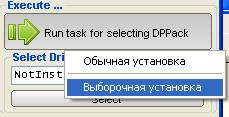
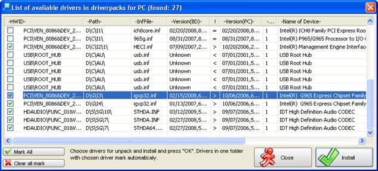
Program DPinst (Developed byMicrosoft) is launched to install drivers, which determines itself proper drivers for your devices.
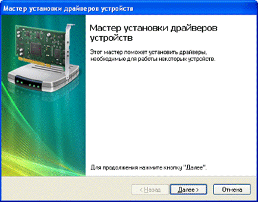
Press Next and wait ...
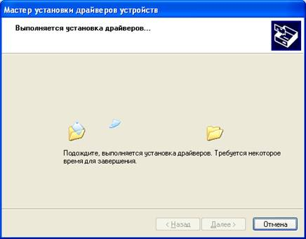
When installation is comlete the window appears in which you can check if drivers are installed or not.

When this window appears:
It is purposeful to press "No", the computer reboot should be made later. Otherwise program can be finished incorrectly.
If option « Process files Finish» is enabled, after drivers installation, in case of successful installation procesing of these files will be launched and additionally to drivers the panels will be installed.
Run program in silent mode
To
run program in silent mode -t
Loading script is following:
1. Loading the program and drivers data collecting.
2. Switching to "Installation (compatible drivers)".
3. Choosing driverpacks "recomended" for installation.
4. Loading of the group installation. Program DPInst starts in silent mode.
5. The panels are installed if necessary (according to dermination file to process files finish) .
6. After installation the program closes.
The silent mode can be launched from menu "Service".
Important notes
DPInst has the following known bugs and limitations:
Slow signature checking on Windows 2000
On
Microsoft Windows 2000, depending on how a driver package was signed, verifying a signature can be slow. To speed up signature
verification, install the Windows 2000 update that is described in  Knowledge Base article 329433.
Knowledge Base article 329433.
While a signature is being verified, DPInst displays a user dialog box that informs the user that the signature is being verified by Windows 2000.
Note This problem does not exist on Windows XP and later versions of Windows.
Unidentified Publisher dialog on Windows Vista and later versions of Windows
In Windows Vista and later versions of Windows, running DPInst.exe will cause a warning dialog box to be displayed that states that DPInst.exe is from an unidentified publisher. Microsoft intentionally did not digitally sign DPInst.exe because it is intended to be redistributed as part of your driver installation package.
/q command line option suppresses notice of installation failure
The /q command line switch (quiet install) suppresses the display of wizard pages, user dialog boxes, and other user messages that DPInst and Windows generate. This includes anything that would notify a user of an installation failure. The status of a quiet installation can be determined from the DPInst return code.
You can also determine the status of a quiet installation by examining the DPInst installation log, which can be found at %SystemRoot%\dpinst.log. If DPInst.exe is called at a command prompt, the /c command line switch will cause DPInst to display the text of the log messages in the Command Prompt window.